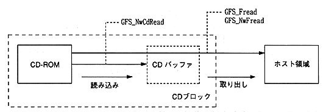
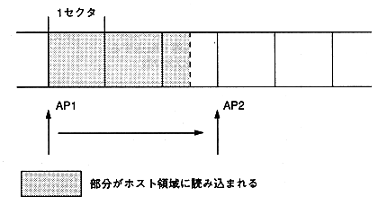

∙ Transferring data from the CD-ROM to the CD buffer is called “reading”, and transferring data from the CD buffer to the host area is called “retrieving”.
∙ Applications can transfer data from CD-ROM without being aware of read processing by using GFS_Fread and GFS_NwFread.
∙ Use GFS_NwCdRead if you want to control the reading process with the application.
